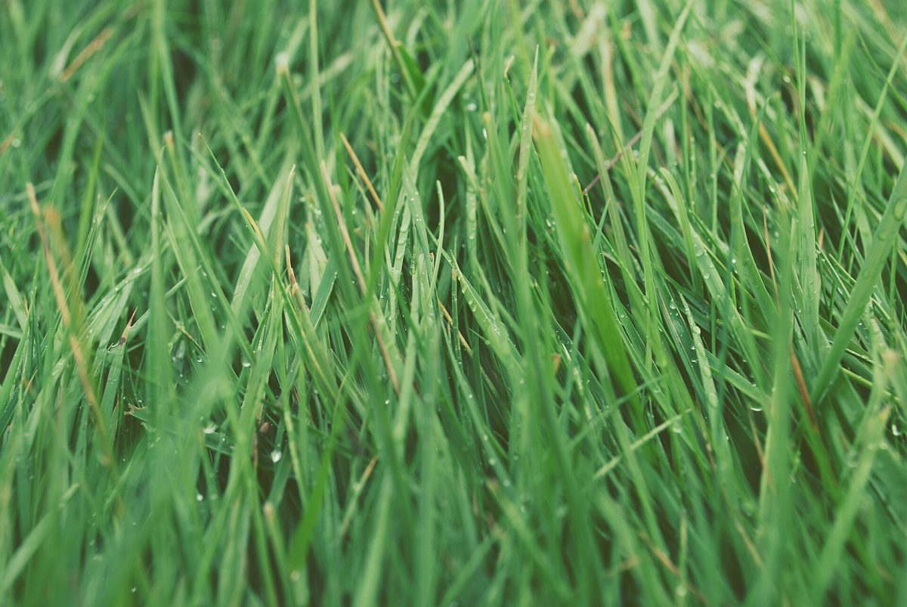

口コミ
こんなお店かもしれない
コーヒースタンドという業種から自然に想像できる声を、制作側が創作したものです。
以下は制作側が考えた創作のイメージ例で、実在のお客様の投稿ではありません。実際の口コミ・評価とは関係ありません。
日が暮れかけた帰り道に立ち寄って、温かい一杯を受け取る。そんな短い休憩ができそうなお店です。
ひとりでふらっと立ち寄れそうな気軽さがありそうです。歩きながら飲む時間まで楽しみになりそうです。
静かな場所で、ほっとひと息つけそうです。店名から、やさしい灯りのような印象を受けます。

